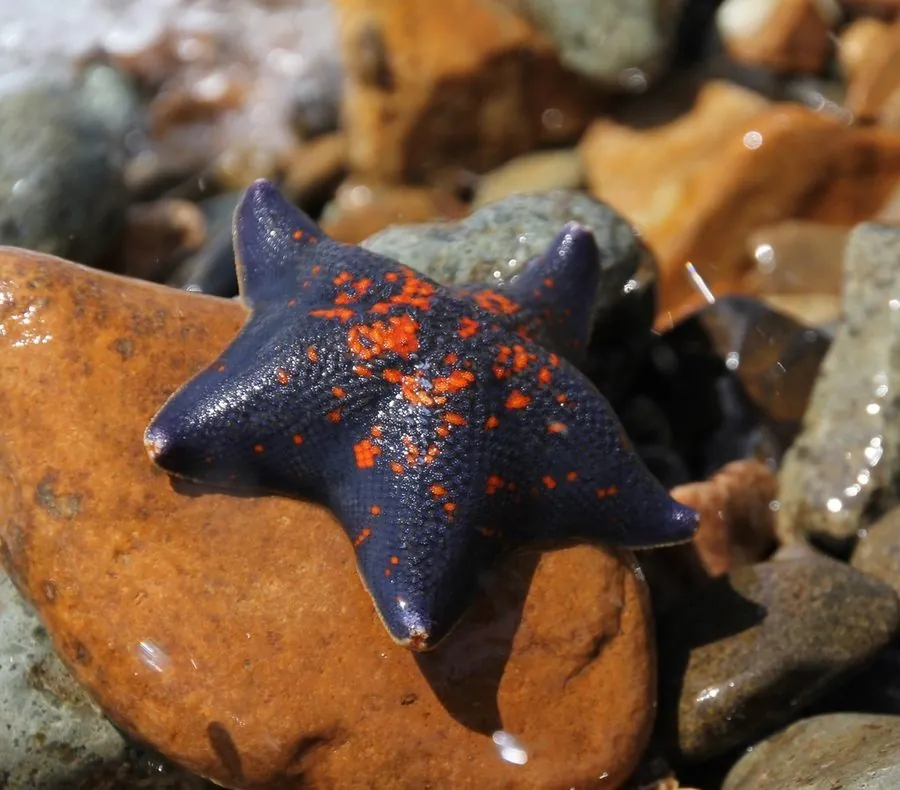

其他无脊椎动物 · 动物界
海燕 Asterina pectinifera

中国北方沿海潮间带常见的五角形小型海星，体表有颗粒和斑纹，取食贝类和有机碎屑，能断腕繁殖。
- 分类
- 门棘皮动物门纲海星纲目瓣棘目科海燕科属海燕属
- 栖息环境
- 潮间带至浅海的岩礁、砾石底和海藻丛
- 地理分布
- 中国北方沿海、日本和朝鲜半岛
- 保护级别
- 暂无评估
物种志
海燕的体型较小，五腕短而粗，展开直径约 5–8 cm，体盘宽大，腕的末端略尖，整体呈五角形。体表有颗粒状突起，颜色多变，背面常呈橙黄、红褐或深褐色，并带有深色斑纹，看起来像一只小燕子。
它生活在潮间带至浅海的岩礁和砾石底，中国北方沿海很常见，取食贝类、有机碎屑和小型无脊椎动物，也会啃食养殖贝类。海燕的再生能力强，断腕后可以重新长出，部分个体还能通过分裂进行无性繁殖。它分布于中国北方、日本和朝鲜半岛沿海，是潮间带生态中的常见捕食者和清道夫；在贝类养殖区数量过多时会造成一定危害。海燕在潮间带的岩缝和石块下很容易找到，是赶海时常见的小动物。
形态与习性
- 食性取食贝类、有机碎屑和小型无脊椎动物
- 体型五腕展开直径约 5–8 cm
- 形态体盘宽大、五腕短粗，形似五角星
- 再生断腕可再生，部分个体能分裂繁殖
- 栖息潮间带至浅海岩礁和砾石底
- 影响数量过多时会啃食养殖贝类
趣味知识
- 海燕的五腕短而粗，整体形状像一只小燕子。
- 它断掉的腕可以重新长出来，部分个体还能分裂繁殖。
- 在贝类养殖区，海燕数量过多时会造成一定损失。